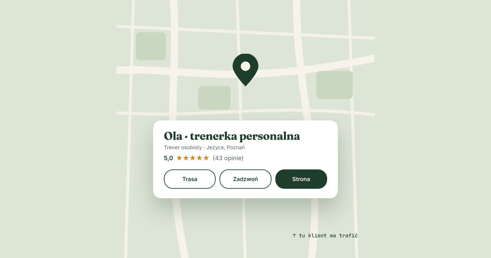

Ktoś wpisuje w telefonie „trener personalny Jeżyce”. Zanim zobaczy jakąkolwiek stronę, Google pokazuje mu mapę i kilka wizytówek: nazwę, gwiazdki, zdjęcia, przycisk „Zadzwoń”. Wielu ludzi wybiera właśnie stamtąd i nigdy nie przewija niżej.
Jeśli nie masz wizytówki, w tym miejscu Cię nie ma. A założenie jej jest darmowe i zajmuje jedno popołudnie.
Czym jest wizytówka Google
To Profil Firmy w Google, wcześniej nazywany Google Moja Firma. Pojawia się w wynikach wyszukiwania i w Mapach Google. Pokazuje, czym się zajmujesz, gdzie działasz, jak się z Tobą skontaktować i co mówią o Tobie klienci.
Nie zastępuje strony. Jest jak szyld nad wejściem: przyciąga uwagę i kieruje dalej.
Nie masz własnego studia? To nie problem
Większość trenerów nie ma lokalu z szyldem. Trenują w siłowni sieciowej, w parku, u klientów w domu albo online. Google ma na to rozwiązanie: firmę działającą na określonym obszarze.
Zamiast adresu podajesz obszar, na którym pracujesz, na przykład Poznań i okolice. Adres i tak trzeba podać przy zakładaniu profilu, bo Google musi zweryfikować, że firma istnieje, ale nie będzie on widoczny dla klientów.
Jedno ważne zastrzeżenie: nie wpisuj adresu siłowni, w której trenujesz, jako swojego. To adres klubu, nie Twojej firmy. Google wymaga, żeby pod adresem pokazanym na profilu była Twoja placówka, a profile z nieprawdziwym adresem potrafią zostać zawieszone.
Jak założyć wizytówkę krok po kroku
- Wejdź na business.google.com/add i zaloguj się na konto Google. Najlepiej na to, którego używasz do pracy.
- Wpisz nazwę. Swoje imię i nazwisko albo nazwę marki, pod którą działasz. Bez dopisków typu „najlepszy trener Poznań”. Nazwa ma być taka, jak w rzeczywistości, a upychanie w niej słów kluczowych jest niezgodne z zasadami Google.
- Wybierz kategorię. Główna to „Trener personalny”. Jeśli robisz też coś innego, na przykład plany dietetyczne, dodasz to później w usługach.
- Ustaw obszar działania zamiast adresu, jeśli nie przyjmujesz klientów we własnym lokalu. Możesz podać miasto, dzielnice albo kilka miejscowości.
- Dodaj telefon i link do strony. Link to najważniejsze pole w całym profilu. To przez nie wizytówka przekazuje Ci klientów, którzy chcą wiedzieć więcej.
- Przejdź weryfikację. Metody nie wybierasz sam, Google przydziela ją automatycznie. Obecnie najczęściej prosi o krótkie nagranie wideo, które pokazuje, że działasz naprawdę. Przygotuj się na to, zanim zaczniesz.
Co uzupełnić od razu
Pusta wizytówka działa słabo. Zanim zaczniesz prosić o opinie, dodaj:
- opis: kim jesteś, z kim pracujesz, czym się wyróżniasz, prostym językiem,
- zdjęcia: prawdziwe, z treningów, Ty przy pracy. Zdjęcie z sesji plus kilka z siłowni wystarczy na start,
- usługi: trening personalny, prowadzenie online, plany treningowe, cokolwiek oferujesz,
- godziny, w których można się z Tobą kontaktować.
Opinie, czyli najważniejsza część
Gwiazdki to pierwsze, na co patrzy klient. I tu trenerzy mają przewagę, bo ich klienci często są naprawdę zadowoleni, tylko nikt ich nie poprosił o opinię.
Jak to robić:
- Proś w dobrym momencie: po pierwszym efekcie, po pobitym rekordzie, po miesiącu współpracy, a nie na pierwszym treningu.
- Wysyłaj bezpośredni link do dodania opinii. Znajdziesz go w panelu profilu. Im mniej klikania, tym więcej opinii.
- Odpowiadaj na każdą opinię, także na te krytyczne. Klienci czytają odpowiedzi tak samo uważnie jak same opinie.
- Nigdy nie kupuj opinii i nie pisz ich sam. To nieuczciwe wobec klientów i zakazane.
Wizytówka i strona: jak to połączyć
Wizytówka i strona robią dwie różne rzeczy. Wizytówka sprawia, że ktoś Cię znajdzie i zobaczy gwiazdki. Strona sprawia, że zdecyduje się napisać.
Dlatego warto, żeby działały razem:
- link z wizytówki prowadzi na Twoją stronę, najlepiej od razu do miejsca, gdzie można umówić konsultację,
- na stronie podajesz ten sam telefon, te same dane i ten sam obszar działania co w wizytówce, żeby Google widział spójną informację,
- opinie z wizytówki możesz za zgodą klientów pokazać też na stronie.
Sama wizytówka to dobry początek. Wizytówka połączona ze stroną, na której klient znajdzie Twoją metodę, ofertę i przycisk kontaktu, to coś, co faktycznie przynosi klientów.
Jeśli chcesz, żeby Twoja strona dobrze współpracowała z wizytówką Google, umów bezpłatną konsultację. Pokażę Ci, jak to połączyć w Twoim przypadku.
Umów bezpłatną konsultację